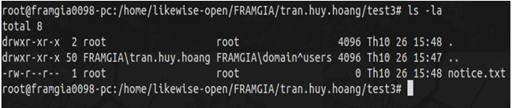
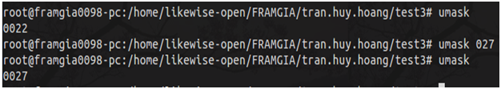

Linux Permission
Bạn đã khi nào deploy ứng dụng web trên server và gặp phải các vấn đề về quyền?
1. Tổng quan về quyền
Một file hay thư mục trong hệ thống có 4 quyền cơ bản sau:
- Read (r): Đối với một file thì quyền Read chính là quyền được xem nội dung của file, còn đối với một folder thì quyền Read chính là quyền xem được danh sách các subfolder và file bên trong folder đó.
- Write (w): Đối với một file thì quyền Write là cho phép thêm, sửa nội dùng file, còn đối với một folder thì Write cho phép thêm, xóa một subfolder hay file trong thư mục đó.
- Execute (x): Đây là quyền thực thi. Đối với một file thì Execute cho phép thực thi file trong trường hợp file này thuộc dạng program hoặc script, còn đối với một folder Execute cho phép cd vào thư mục này.
- Deny (-): Không có quyền làm một thao tác gì đó đối với một file hay folder xác định.
2. Cách xem sự phân quyền
Dùng lệnh ll hoặc ls -la.
Như trên ta thấy câu lệnh ls -la liệt kê ra danh sách thư
mục và file gồm thư mục hiện tại, thư mục con và file đi cùng với chúng ta
thông tin phân quyền. Ngoài ra còn có cả user và group nữa.
Cột đầu tiên gồm 10 bits thể hiện quyền hạn.
drwxr-xr-x 2 root root afolder (1)
-rw-r--r-- 1 root root notice.txt (2)
Bit đầu tiên thể hiện kiểu file. Ví dụ ở (1) “d” cho biết đó là thư muc, (2) “-” cho biết đó là 1 file thường.
Ba bít tiếp theo thể hiện quyền của user sở hữu file này.
Ba bít tiếp theo thể hiện quyền của group sở hữu file này.
Ba bit cuối thể hiện quyền của các user khác.
Ví dụ trong (2):
- Ba bít đầu là “rw-” chỉ ra rằng owner user có quyền đọc (r), sửa (w) file “notice.txt”
- Ba bít tiếp là “r--” chỉ ra rằng owner group có chỉ có thể đọc (r) file này và không có quyền khác
- Ba bít cuối là “r--” chỉ ra rằng other user có chỉ có thể đọc (r) file này và không có quyền khác
3. Thay đổi quyền
Chỉ có user có quyền root hoặc owner user của file mới có thể thay đổi quyền của file đó.
Sử dụng lệnh chmod để thay đổi quyền:
chmod <mode> file_name
Trong đó “mode” có thể được viết theo 2 cách là symbolic hoặc octal.
| Symbolic mode | Octal mode | |
| Mô tả | Trong cách này chúng ta có thể thêm “op” (+ - =)(thêm, loại bỏ, chỉ định) các quyền “permissions” (r w x) cho từng nhóm đối tượng “who” (u g o a)(user, group, other, all) |
Trong cách này mỗi quyền được thể hiện bằng một số tương ứng - : 0, x : 1, w : 2, r : 4 Quyền của mỗi nhóm đối tượng thể hiện ở tổng của các thành phần Khi gán quyền phải gán cho cả 3 nhóm |
| Cách dùng | Mode = (who) + (op) + (permissions) | Ví dụ: 644 rw-r–r– 751 rwxr-x–x 775 rwxrwxr-x 777 rwxrwxrwx |
| Ví dụ | chmod g-w notice.txt Bỏ quyền write trên group Một vài ví dụ thêm: g+rw: cho phép group sở hữu có quyền đọc và ghi a+rws: cho phép toàn bộ user có full quyền o+rws: cho phép user còn lại có full quyền u+x: cho phép các user sở hữu có quyền thực thi |
chmod 644 notice.txt 6 = rw- nghĩa là owner user có quyền đọc ghi file 4 = r-- nghĩa là group chỉ có quyền đọc file 4= r-- nghĩa là other user cũng chỉ có quyền đọc file |
| Ghi chú | Ưu điểm là chúng ta có thể kế thừa quyền cũ | Cách này không thể kế thừa quyền cũ nhưng bù lại cú pháp ngắn gọn dễ dùng |
To change all the directories to 755 (drwxr-xr-x):
find /opt/lampp/htdocs -type d -exec chmod 755 {} \;To change all the files to 644 (-rw-r--r--):
find /opt/lampp/htdocs -type f -exec chmod 644 {} \;4. Quyền mặc định và thay đổi quyền mặc định với umask
Khi chúng ta tạo ra file hoặc thư mục, mặc định hệ thống gán cho nó 1 quyền mặc định
- File: 666 (rw-rw-rw-) (3)
- Folder: 777 (rwxrwxrwx) (4)
Vậy nếu chúng ta muốn thay đổi quyền mặc định của một file, folder khi nó được tạo thì phải làm thế nào.
Trong linux điều này khá đơn giản, bởi hệ thống cung cấp cho chúng ta một công cụ đó là umask. Khi umask được khởi tạo giá trị thì các quyền mặc định sẽ không còn như (3) và (4) nữa.
Mặc định thì umask = 022. Khi đó các quyền mặc định với file và folder được tính lại như sau:
File:
666: rw- rw- rw-
022: --- -w- -w-
644: rw- r-- r--
Folder:
777: rwx rwx rwx
022: --- -w- -w-
755: rwx r-x r-x
Lưu ý: có một trường hợp ngoại lệ, nếu như umask=123 thì quyền mặc định cho file sẽ là 644 chứ không phải là 543.
Xem giá trị và thay đổi giá trị umask rất đơn giản như ví dụ dưới đây:
5. Thay đổi owner với chown
Cú pháp:
chown <option> [user.group] files/folder
options: -R được sử dụng trong trường hợp muốn đổi tất cả subfolder và files trong thư mục.
chgrp
Lệnh chmod chỉ có khả năng thay đổi quyền truy xuất tới file (đọc, ghi, thực thi ...).
Còn nếu ta muốn thay đổi chủ sở hữu hoặc nhóm sở hữu thì
phải dùng đến 2 lệnh là chown và chgrp.
chown là lệnh dùng để thay đổi chủ sở hữu (có thể thay đổi nhóm sở hữu) còn chgrp thì chỉ cho phép thay đổi nhóm sở hữu của file.
VD:
chown john:admin file_a
sẽ chuyển quyền sở hữu của file_a sang cho người dùng john và nhóm admin.
chmod video file_b
sẽ chuyển nhóm sở hữu cho file_b sang nhóm video.
Đặc biệt ta có thể thêm tùy chọn -R (hoặc --recursive) để chuyển quyền cho toàn bộ cây thư mục (file và thư mục con).
Tùy chọn này sẽ hữu ích khi ta muốn thay đổi chủ sở hữu hoặc nhóm trên tất cả file trong thư mục nào đó mà không muốn lặp đi lặp lại một thao tác.